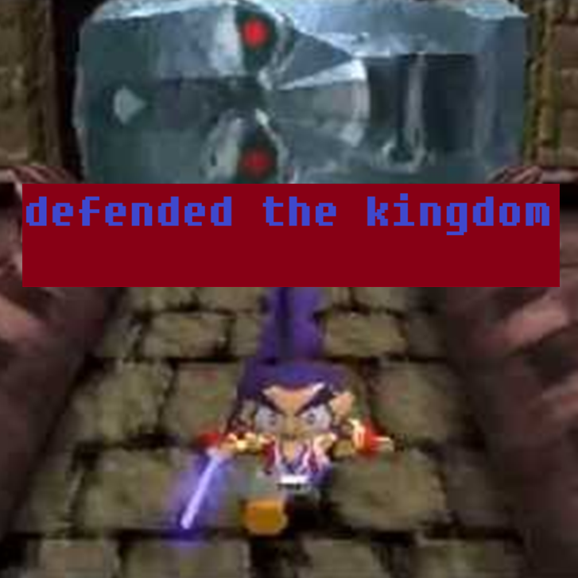
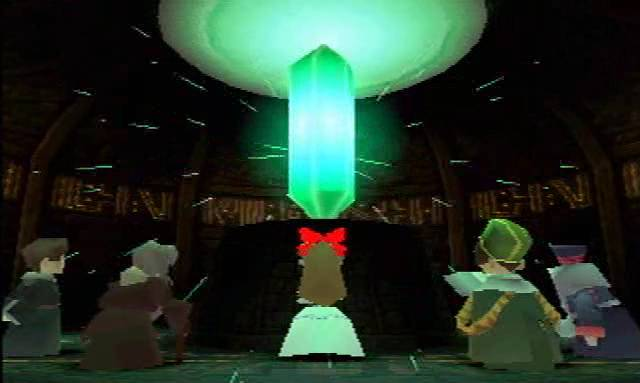
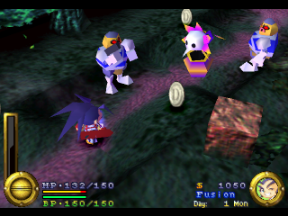
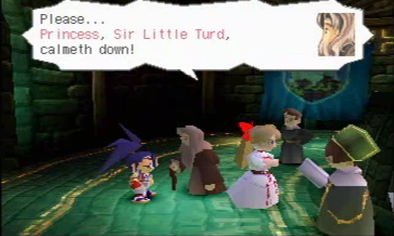
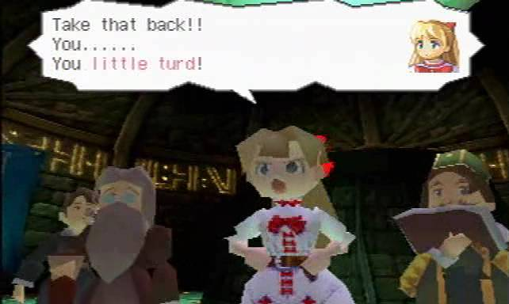

Brave Fencer Musashi
A real-time action RPG from Squaresoft where young swordsman Musashi is summoned to defend the Allucaneet Kingdom from the Thirstquencher Empire. Features fluid, real-time swordplay with a dual-blade system and the ability to absorb enemy abilities similar to Kirby. The game includes a day-night cycle that affects NPC schedules, enemy behavior, and Musashi's physical abilities based on fatigue and hunger. An unusual and memorable Squaresoft title.
.png)
| Platform | Sony PlayStation |
|---|---|
| Genre | Action-Adventure / Action RPG |
| Released | |
| Developer | Square |
| Publisher | Square |
| Available | PS1, PSN (Japan only) |
Where to Play
About This Game
Brave Fencer Musashi was developed by Square (now Square Enix) and released for the PlayStation in 1998, during the studio's extraordinary late-90s creative peak. Loosely inspired by the legendary Japanese swordsman Miyamoto Musashi, the game is an action RPG where the pint-sized hero wields two swords—Fusion, which absorbs enemy abilities, and Lumina, a legendary blade that gains new powers throughout the story. The game featured a real-time day/night cycle that affected NPC schedules, shop availability, and enemy behavior—a design choice that was ambitious for its era.
In North America, Brave Fencer Musashi became famous for an unusual reason: it included a playable demo disc for Final Fantasy VIII, which for many players was the primary purchase motivation. This somewhat overshadowed the game itself, which was a charming and inventive action RPG in its own right. Square's localization gave the game a playful, Saturday-morning-cartoon personality with voice acting and humor that set it apart from the studio's more serious RPG output. While it never became a blockbuster, it remains a fan-favorite hidden gem from Square's golden age.
Did You Know?
- The FFVIII demo was the real seller — Many North American buyers purchased Brave Fencer Musashi primarily for the included playable Final Fantasy VIII demo disc. This was a common Square tactic — Tobal No. 1 had similarly benefited from a bundled FFVII demo — and it gave Brave Fencer Musashi a significant sales boost it likely wouldn't have earned on its own.
- Real-time day/night cycle — The game featured an ambitious real-time clock system where NPCs followed daily schedules, shops opened and closed, and Musashi would get sleepy and need to rest. Missing sleep actually degraded his combat performance.
- Named after a real swordsman — The game draws loose inspiration from Miyamoto Musashi, the legendary 17th-century Japanese swordsman who authored "The Book of Five Rings." Several characters and locations reference Japanese feudal history with a comedic twist.
- Extensive voice acting — Brave Fencer Musashi was one of the earliest PS1 RPGs with significant English voice acting for its key scenes and characters. The localization leaned into a campy, Saturday-morning-cartoon tone that gave the game a distinct personality among Square's otherwise serious RPG catalog.
Critical Reception
Accolades
- Hidden Gem Frequently cited as one of Square's most underrated PS1 titles — USgamer, 2018
- Best Action RPG Nominated alongside Zelda: Ocarina of Time at release — GameSpot, 1998
- Cult Classic Recognized in retrospectives as a standout of Square's golden era — Retronauts, 2020
Club Achievements

Beat the Game
GoldOther Participants
Speedrun Records
Brave Fencer Musashi has a niche but active speedrunning scene. Runners exploit precise movement tech, ability absorbs, and sequence breaks to blaze through the Allucaneet Kingdom.
Soundtrack
Composed by Tsuyoshi Sekito
Tsuyoshi Sekito, who would later co-compose the Final Fantasy X battle themes and The Last Remnant soundtrack, delivered a vibrant and eclectic score mixing rock guitar, orchestral arrangements, and playful melodies. The music perfectly matches the game's Saturday-morning-cartoon energy while delivering surprisingly memorable battle themes.
Notable Tracks
- Brave Fencer Musashi Main Theme
- Meandering Forest
- Twinpeak Mountain
- Fight!! Musashi
- Allucaneet Castle
- The Frozen Palace
Screenshots




Screenshots via LaunchBox Games Database
If You Liked This
.png)
Sources & Attribution
- Game description and historical background adapted from Wikipedia
- Trivia sourced from developer interviews and community research
- Review scores from IGN, GameSpot, and Famitsu
- Speedrun data from Speedrun.com
- Playtime estimates from HowLongToBeat
- Screenshots and box art via LaunchBox Games Database
- Soundtrack information from KHInsider
- Pricing data from PriceCharting